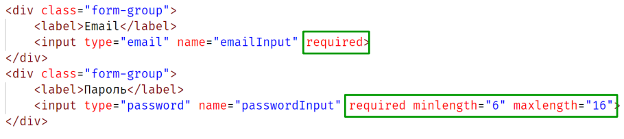

Тема 3. Форми та інтерактивні елементи
Тема 3. Форми та інтерактивні елементи
- Тег form
- Робота з формою через JavaScript
- Елементи управління
- Що таке перевірка даних форми
- Події форми та елементів управління
- HTML5 валідація форм
Тег form
Тег form застосовується для створення форми з елементами керування, яка
використовуватиметься для обміну даними між користувачем та сервером. Насамперед
форма потрібна, щоб відправити введені користувачем дані на сервер, але також браузер
надає зручний інтерфейс для роботи з формою та її елементами керування. Тому форми
використовуються в додатку навіть тоді, коли необхідно надавати дані для користувача
сценарію, не відправляючи їх відразу на сервер.
Елементи управління форми є тегом input. Для зміни типу елемента керування
використовується атрибут type тега input
Щоб вказати куди і як відправлятимуться значення, введені у форму, використовуються
атрибути action та method.
Щоб кожне значення, відправлене на сервер, було пов'язане з ім'ям, для елементів input
необхідно встановити значення атрибута name.
Приклади 001, 002 з examples/1-forms-and-controls
Робота з формою через JavaScript
- document.forms[0] – отримання першої форми на сторінці
- document.forms.loginForm – набуття форми з атрибутом name=“loginForm”
- form.elements[0] – отримання першого елемента у формі
- form.elements.login – отримання елемента форми з атрибутом name=“login”
- form.login – одержання елемента форми з атрибутом name=“login”
Приклади 003, 004 з examples/1-forms-and-controls
Робота з формою через JavaScript
- Властивість value елемента input type=text містить значення, яке вводив користувач.
- Щоб отримати значення вибраного елемента radio, необхідно використовувати
властивість value, а radio елементи, що входять до однієї групи, повинні використовувати
одне значення для атрибута name
-
Для створення списку, що випадає, використовується елемент select, для визначення
елементів випадаючого списку використовується елемент option.
- date, time, week – значення атрибута type для елементів, що використовуються для
роботи з датою та часом. Дані атрибути не підтримуються у старих браузерах, і такий
елемент керування буде відображатися як звичайне поле введення.
Приклади 005 - 009 з examples/1-forms-and-controls
Що таке перевірка даних форм
Перевірка даних форми або валідація - це процес, у якому з'ясовується, чи підходять отримані дані
додатка, і якщо це негаразд, користувач отримує інформацію усунення помилок.
Процес перевірки:
- Перевірка даних.
- Допомога користувачеві у коригуванні даних.
Типи перевірок:
- На стороні сервера.
- На стороні клієнта (HTML5, JavaScript)
Що таке перевірка даних форм
Перевірка форми – обов'язкова дія, що виконується на стороні клієнта, навіть якщо
перевірка даних є на стороні сервера. Перевірка введених даних забезпечує правильність
даних, захист даних та серверної сторони.
На стороні клієнта перевірка форми відіграє в
основному роль, пов'язану зі зручністю використання, оскільки не потрібно чекати
відповіді сервера, щоб вказати, де була допущена помилка.
Валідація на стороні сервера
необхідна для того, щоб забезпечити цілісність та безпеку даних.
Події форми та елементів управління
При валідації форми використовується кілька подій:
- submit – форма відправляється на сервер (натиснута кнопка submit у формі)
- change – значення елемента керування змінено (спрацьовує після втрати фокусу)
- input – значення елемента управління змінено (спрацьовує при кожній зміні)
- focus – елемент керування отримав фокус
- blur – елемент керування втратив фокус
- copy – користувач виконує копіювання
- paste – користувач виконує вставку значення
- cut – користувач вирізає значення
Приклади 001 - 005 з examples/2-form-validation
HTML5 валідація
При використанні вбудованої перевірки через атрибути HTML5 правила перевірки
вказуються за допомогою спеціальних атрибутів, а сама перевірка проводиться в момент
зміни значення поля введення і в момент відправки даних на сервер подією submit.

При використанні вбудованої перевірки елемент управління отримує клас valid, якщо
введене значення відповідає обмеженням, заданим через атрибути та invalid, якщо
значення порушує задані правила.
Типи input, які підтримують перевірку введених значень:
- type=”url” – перевіряє значення на відповідність URL адреси
- type=”email” – перевіряє на відповідність адреси електронної пошти
HTML5 валідація
Атрибути валідації:
- pattern – значення має відповідати регулярному виразу
- min – значення має бути більшим, ніж зазначене
- max – значення має бути меншим, ніж зазначене
- required – обов'язкове значення
- step – значення має бути кратним кроку
- maxlength – кількість символів значення не повинна перевищувати вказане
- minlength - кількість символів має бути більшою, ніж зазначена або рівна йому
Приклад 006 з examples/2-form-validation
HTML5 валідація - setCustomValidity
setCustomValidity – метод, який використовується для додавання повідомлення
користувача, пов'язаного з перевіркою правильності введених даних. При виклику даного
методу на елементі керування значення, введене в елемент керування, вважається не
валідним, а параметр, який передається в метод setCustomValidity, визначає текст
повідомлення про помилку, яке буде показано користувачеві. Для того, щоб усунути
помилку з елемента управління, потрібно викликати метод setCustomValidity з передачею
порожнього рядка як параметр
Даний метод може використовуватися для додавання своїх правил до валідації форми
через HTML5 атрибути та для локалізації повідомлень
Приклад 007, 008 з examples/2-form-validation
HTML5 валідація
pattern – атрибут, який використовується для перевірки введеного значення за допомогою
регулярного виразу.
- a - відповідає символу а
- abc - відповідає символу a, далі b, далі c
- \d - будь-яка цифра
- \D - будь-який символ, що не є цифрою
- \w - будь-який символ латинського алфавіту, цифри та символ нижнього підкреслення
- \W - усі символи, крім символів латинського алфавіту, цифр та символ нижнього
підкреслення
- [ ] - група символів, зазначених у дужках, наприклад [abc] відповідає символу a або b або
c
- [a-z] - будь-який символ від а до z (у нижньому регістрі)
- [0-9] - будь-який символ від 0 до 9
- [0-9a-zA-Z] - будь-який символ від 0 до 9 або будь-який символ латинського алфавіту в
нижньому або верхньому регістрі
Приклад 009 з examples/2-form-validation
HTML5 валідація
Квантифікатори – вказують кількість символів, яка має зустрітися у значенні, що
перевіряється.
- * - 0 або більше разів
- + - 1 або більше разів
- ? - 1 або 0 разів
- {n} - n разів
- {n,m} - від n до m разів
- \d+ - відповідає рядку, що складається з одного та більше цифрових символів, наприклад,
1, 22, 123, 7777 і т. д.
- \d{2,4} - відповідає рядку, що складається з двох, трьох або чотирьох цифрових символів,
наприклад 10, 88, 123, 5671 і т. д.
- [a-z]{3}\d{2} - три будь-які символи латинського алфавіту і дві будь-які цифри,
наприклад, abc12, rgb43
- abc\d\d\d - символи abc та три цифри, наприклад, abc111, abc123 і т.д.
https? - символи http та 1 або 0 символів s - http або https
Підсумок
- HTML надає безліч різних типів полів форми - текстові, checkboxes, множинного вибору, вибору файлу.
- З JavaScript можна отримувати значення та маніпулювати цими полями. За зміною вони запускають подію
"change", з введення з клавіатури - "input", і ще багато різних клавіатурних подій. Вони допомагають нам
відловити момент, коли користувач взаємодіє із полем введення. Властивості на зразок value (для текстових
полів та select) або checked (для checkbox та radio) використовуються для читання та запису вмісту полів.
- При передачі форми відбувається подія submit. Обробник JavaScript потім може викликати preventDefault цієї
події, щоб зупинити передачу даних.
Контрольні питання
- Навіщо використовується тег form?
- Назвіть способи отримання форми на сторінці.
- Як можна перебрати всі елементи керування у вибраній формі?
- У чому різниця checkbox та radio елементів керування?
- Що буде відображено користувачеві, якщо тип date не підтримується для елементів input
у браузері?
- Які події можна використовувати для перевірки зміни даних у полі введення?
- Які є способи перевірки даних форми?
- Який атрибут потрібно використовувати для вказівки обмеження на введення лише
електронних адрес в полі введення?
- Що робить метод setCustomValidity?
- Що таке регулярний вираз?
- Які HTML5 атрибути підтримують перевірку через регулярні вирази?